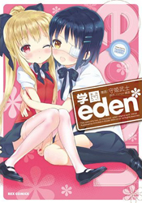
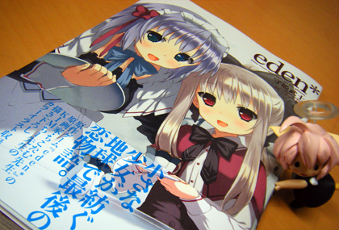
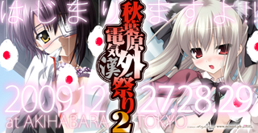
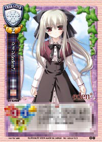
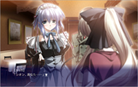
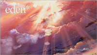
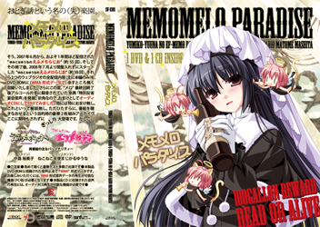

「月刊Comic REX」誌でお馴染み、「学園eden* 」のコミックスが、本日より発売となりました！
同じく守姫センセイによる、「eden* 」コミックス(こちらも発売中)と併せて、 是非どうぞ♪
| 12.01.27 |
●学園eden* 「月刊Comic REX」誌でお馴染み、「学園eden* 」のコミックスが、本日より発売となりました！ 同じく守姫センセイによる、「eden* 」コミックス(こちらも発売中)と併せて、 是非どうぞ♪ |
| 11.11.30 |
大変ご好評頂いております、携帯電話ソーシャルシミュレーションゲーム「eden* 学園恋物語」ですが、稼働中のモバゲーに続き、この度GREEでもお楽しみ頂けるようになりました。アクセス・ご利用方法等は下記をご参照ください。 ----------------------------------------------------------------------- ●「eden*-学園恋物語」について [ GREE (グリー)版 ] ・アクセス/利用方法 携帯電話から http://mpf.gree.jp/3060 (アプリケーションへの直接リンク)にアクセス。 （「GREE」への無料会員登録後、利用可能。） ・利用料金：基本無料+アイテム課金 ![携帯電話から[ http://mpf.gree.jp/3060 ]にアクセス♪](imgs/edensocial_gree.jpg) [ Mobage (モバゲー)版 ] ・アクセス/利用方法 携帯電話からhttp://mbga.jpにアクセスし、「ゲーム」→「eden」で検索。 （「モバゲータウン」への無料会員登録後、利用可能。） ・利用料金：基本無料+アイテム課金 ----------------------------------------------------------------------- 全寮制の高校を舞台に、4人の「eden*」キャラクターと主人公が織り成す恋愛模様が展開。「eden*最後の恋物語」本編と絡みながら展開していきます。よろしければ遊んでみてくださいませ。 |
| 11.04.07 |
携帯電話でお楽しみ頂けるソーシャルシミュレーションゲーム「eden* 学園恋物語」が、正式にスタートいたしました♪ アクセス・ご利用方法等は下記とのことです。 ------------ 「eden*-学園恋物語」について ・アクセス/利用方法 携帯電話からhttp://mbga.jpにアクセスし、「ゲーム」→「eden」で検索。 （「モバゲータウン」への無料会員登録後、利用可能。） ・利用料金：基本無料+アイテム課金 ------------ 全寮制の高校を舞台に、4人の「eden*」キャラクターと主人公が織り成す恋愛模様が展開。「eden*最後の恋物語」本編と絡みながら展開していきます。よろしければ遊んでみてくださいませ。 |
| 10.03.08 |
 「eden* 」コミックス、3月9日より発売です！ もう一つの“楽園”コミック版“eden*”。その第１巻が、いよいよ3月9日より発売開始です！ 星の記憶と共に、是非お手元にどうぞ。 ちこたむ＆KIMちー両作家による描き下ろしイラストも収録しております♪ そして先日お知らせした『eden*』携帯サイトですが、Yahoo!ケータイもサービスインしました！ よろしければどうぞ。 アクセス方法 ｉモード：[メニューリスト]→[ゲーム/コミック/占い]→[ゲーム]→[恋愛ゲーム]→[eden*] Yahoo!ケータイ：[メニューリスト]→[ケータイゲーム]→[恋愛・美少女ゲーム]→[eden*] EZweb：3月25日よりサービス開始予定 |
| 10.02.26 |
「eden* ビジュアルファンブック」、本日26日より発売です！ ちこたむ氏、コミック版『eden*』の守姫武士氏、そして鏡 遊による描き下ろし等々も収録した充実の内容＆『シオン＆エリカのちょっとえっちなピンナップポスター』まで着いている、ちょっと小粋な一冊です。 よろしければチェックしてみてくださいませ♪ そして先日お知らせした『eden*』携帯サイトも、よろしければどうぞ。 アクセス方法 ｉモード：[メニューリスト]→[ゲーム/コミック/占い]→[ゲーム]→[恋愛ゲーム]→[eden*] EZweb：3月25日よりサービス開始予定 Yahoo!ケータイ：3月1日よりサービス開始予定 |
| 10.02.10 |
かねてより、意外な程ご要望を頂いたりしていた『eden*』のビジュアルファンブックですが、この度正式に発売が決定いたしましたよ！ タイトルはずばり「eden* ビジュアルファンブック」！ ストレートなの、嫌いじゃない。そんなアナタにお送りするこの一冊。2月26日発売です！ そして気になる内容は…… --- minoriの最新PCゲーム『eden*』のビジュアルファンブックがついに発売!! カバーは原画のちこたむ氏による描き下ろし！ キービジュアルや販促イラストなどを大量収録したイラストギャラリーやスタッフコメントや初期ラフなどを掲載したキャラクター紹介、美麗CGを元に感動のストーリーを振り返るグラフィック紹介、そして制作秘話に迫る濃厚なスタッフインタビューなどなど『eden*』の魅力を完全収録！ もちろん『eden* PLUS+MOSAIC』のムフフなCGも収録しちゃいます！ その他、鏡遊氏書き下ろしショートストーリーやコミック版『eden*』の守姫武士氏による描き下ろしショートコミックも収録した超充実の内容！ ちこたむ氏描き下ろし『シオン＆エリカのちょっとえっちなピンナップポスター』付き！ --- という有様。描き下ろしものが結構あるので、それだけでも楽しいのではないかと思います。26日はもうちょっと先ですが、どうぞよろしくお願いいたします♪（確実な入手には、ご予約がよろしいのではと思います） そして先日お知らせした『eden*』携帯サイトもよろしければどうぞ。 アクセス方法 ｉモード：[メニューリスト]→[ゲーム/コミック/占い]→[ゲーム]→[恋愛ゲーム]→[eden*] EZweb：3月25日よりサービス開始予定 Yahoo!ケータイ：3月1日よりサービス開始予定 |
| 10.01.29 |
という訳で、本日1月29日は、『eden*』サントラCD「Asterisk」の発売日です！ 作品をプレイしてお気に召した方は勿論、天門・柳ファンの皆様、チェックしてみてくださいませ♪ （余談ですが『Alato』の時と同様、どんどん生産できる感じではないので、ご入用の方は、お早めにチェックしていただければ安心かもしれません。まあ、出荷少ない訳ではないので、いつでも買えるかもですけどね） そして！ 2009年夏前よりお楽しみいただいたWEBラジオ「終末のエデン」も、いよいよ本日配信分で最終回を迎えます！ これまで聴いてくださった皆様、ありがとうございます。そして最終回も何卒、お楽しみいただければ幸いです。（余談ですが、そのうちまたまとめディスクみたいなものを出せるといいなあ、と思っておりますー♪） ということで、今日は『eden*』関連情報をいくつかお届けいたしました！ どうぞよろしくお願いいたします。 そして先日お知らせした『eden*』携帯サイトもよろしければどうぞ。 アクセス方法 ｉモード：[メニューリスト]→[ゲーム/コミック/占い]→[ゲーム]→[恋愛ゲーム]→[eden*] EZweb：3月25日よりサービス開始予定 Yahoo!ケータイ：3月1日よりサービス開始予定 |
| 09.10.09 |
『eden*』発売発売から3ヶ月ほど経ちましたが、皆様プレイしていただけましたでしょうか？ そんな2009年も終わりという今日この頃、『eden*』サウンドトラック [ Asterisk ] 発売のお知らせです！ 全国のPCソフト取り扱い店さま等にて、ご予約受付中だと思います。是非ゼヒよろしくお願いいたします♪ なお、同サントラは、2009年12月27日より開催の「秋葉原電気外祭り 弐」にて、おまけ付きで先行販売予定です。併せてご利用くださいませー。  (同イベントは、18禁グッズもあるので、お若い方はお気をつけてくださいね) |
| 09.10.09 |
『eden*』発売発売から半月ほど経ちましたが、皆様プレイしていただけましたでしょうか？ そして遊び終えた方も多いかと思う今回は、 スペシャルコンテンツ第十回の更新です！ キャストさんコメント映像、第六弾はナツメ役・岡田 純子さん登場！ 発売までナイショの人物だったナツメに関するお話など、いろいろお話いただきました。是非ゼヒご覧ください♪ またウェブラジオ「終末のエデン」本日更新です。こちらもチェックしてみてくださいマセー。 |
| 09.09.18 |
『eden*』本日発売！ シオンやエリカ、ラヴィに逢える日です！ よろしければ連休のお供に是非♪ ●そしてそして！ スペシャルコンテンツ第九回更新です！ キャストさんコメント映像、第五弾はラヴィ役・中村 繪里子さん！ 是非ゼヒご覧ください♪ ●また、本日更新予定のウェブラジオ「終末のエデン」では、キャストコメントと同時に中村 繪里子さんをゲストにお迎え！ ついでにminoriの人たちも少しお邪魔してお送りいたしますので、こちらもチェックしてみてくださいマセー。 |
| 09.09.17 |
えっ？ 要するに明日？ 発売カウントダウンボイス「1日前」編を公開いたしました♪ うわあああ そして！ スペシャルコンテンツ第八回更新！ キャストさんコメント映像シリーズ、第四弾は稲葉役・遠近 孝一さん登場！ ウェブラジオをお聴きの皆様も、是非ゼヒご覧ください♪ |
| 09.09.16 |
発売カウントダウンボイス「2日前」編を公開いたしました♪ 物凄い至近！ そして本日も！ スペシャルコンテンツ第七回更新！ キャストさんコメント映像シリーズ、第三弾はエリカ役・中島 裕美子さん登場！ ウェブラジオをお聴きの皆様も、是非ゼヒご覧くださいませ♪ |
| 09.09.15 |
発売カウントダウンボイス「3日前」編を公開いたしました♪ ち、近いっ /// そして畳み掛けるように、スペシャルコンテンツ第六回更新！ キャストさんコメント映像シリーズ、第二弾は亮役・間島 淳司さん登場！ 是非ゼヒご覧あれ♪ |
| 09.09.14 |
発売カウントダウンボイス「4日前」編を公開いたしました♪ ふたりプレイでお届けしておりますー |
| 09.09.13 |
そして今日も 発売カウントダウンボイス「5日前」編を公開いたしました♪ 気付けばもう、発売までスグですよ！ |
| 09.09.12 |
と言うわけで、お知らせ通り 発売カウントダウンボイス「6日前」編を公開いたしました♪ そして今日はウェブラジオ「終末のエデン」も更新されておりますー。先週に引き続き、亮役・おっぱい・間島さんがゲストです！ |
| 09.09.11 |
と言うわけで！ 遂に発売まで1週間！ 発売カウントダウンボイスを公開いたしました！ 出来れば、これから毎日『eden*』発売まで更新したいと思いますのでよろしくです♪ [ お知らせ ] 『eden*』初回出荷分に、カードゲーム[ Lycee ] のプロモーションカードが同梱される予定です。番号は『CH-2340B：シオン（eden*）』です。  Lycee を既に楽しまれている方も、「ちょっと興味があったんだよー」という方も、どうぞ♪ |
| 09.09.04 |
ウェブラジオ [ 終末のエデン ]、更新です。今回は亮役・間島 淳司さんをゲストにお迎え！ おっぱ、いや、是非聴いてみて下さいマセ。 |
| 09.09.02 |
スペシャルコンテンツ第五回更新！ キャストさんコメント映像シリーズ、一発目はシオン役・志村 由美さん登場！ 是非ゼヒご覧下さい♪ |
| 09.08.30 | またもや、ご予約促進おねだりボイスを公開いたしました！ いよいよ9月。ご予約はお早めにどうぞ♪ |
| 09.08.26 |
ラヴィのご予約促進おねだりボイスを公開いたしました。ラヴィかわいいですよね。また、先日お知らせいたしました『eden*』体験版(CD-ROM版)の配布、下記となります。 --- ■8月28日 ・場所：東京秋葉原 AKIHABARAゲーマーズ本店様店頭にて配布 ・時間：18時（午後6時）より配布開始予定  ※おひとり様1枚までとさせていただきます。 ■8月29日〜 ・場所：全国のゲーマーズ様にて ・8月29日（土）開店時より、PCゲームをご購入頂いたお客様に『eden*』の体験版をお渡しいたします。ご希望のお客様はスタッフさんまでお声掛け下さい。 ※おひとり様1枚までとさせていただきます。 --- よろしくお願いいたします♪ ※ 数に限りがございますので、品切れの際はお渡しできない可能性がございます。あらかじめご了承ください。 |
| 09.08.21 | ウェブラジオ [ 終末のエデン ]、更新いたしました。シオン役・志村 由美さんをゲストにお迎えしてお送りしております♪ 何か、ラジオっぽくていい感じですので、是非聴いてみて下さいマセ。 |
| 09.08.17 |

『eden*』Web体験版を公開しました。本作で新規開発・採用した新規演出効果をご覧いただける内容となっております。お使いの環境での動作確認にも、是非ご利用ください。 |
| 09.08.08 |

お待たせしました！『eden*』デモムービーを公開しました！ また、主題歌「little explorer」の発売を記念して壁紙を公開いたしましたのであわせてご利用ください！ |
| 09.08.07 |
本作メインテーマ曲CD [ little explorer ] 本日発売！ またショップさん店頭で、『eden*』デモムービーも公開開始!! ムービーは後程（今日の夜とか）このサイトでもご覧頂けたりできるようにしたいと思いますので、よろしくどうぞ♪ （あと、いわゆるショップさん特典とかのラフ画像・情報公開始まるかもです。詳細はショップ様へGO!） |
| 09.07.31 |
ウェブラジオ [ 終末のエデン ]、第5回更新いたしました。その中で何となくお知らせしております「えふメモ＋えふメロまとめDVD+CD“メモメロパラダイス”」無事に出そうです！  |
| 09.07.27 |
本作メインテーマ曲CD [ little explorer ]の告知ページを公開。8月7日発売です。 |
| 09.07.24 |
ウェブラジオ [ 終末のエデン ]、第4回更新いたしました。その中で何となくお知らせしておりますが、以前のウェブラジオ「えふメモ＋えふメロ」のまとめディスクみたいのを作っております。詳細は近日中にお知らせいたします。 あとラジオ開始記念壁紙を“Download”ページにて公開中です。 |
| 09.07.17 |
ウェブラジオ [ 終末のエデン ]、第3回更新いたしました。徐々に慣れてきた感じもある不安なトークをお楽しみいただけます♪ またラジオ開始記念壁紙を“Download”ページにて公開中です。よろしくどうぞ。 |
| 09.07.10 |
いろいろあるので箇条書きでまとめてみました。 ●[ スペシャルコンテンツ ] 第四回、更新です キャラクターデザイン・原画の ちこたむ さんインタビューを掲載いたしました。シオンの小ささのヒミツが明らかに！？ ●[ 終末のエデン ] 本日更新しましたー ウェブラジオ [ 終末のエデン ] 第2回目、本日更新です。エリカ役・中島さん＆稲葉役・遠近さんのコンビでお送りいたします。初のスタジオ収録版、是非お聴きくださいませ。 ●[ eden* ] コミック連載開始♪ 7/9より発売の雑誌“月刊コミック REX(一迅社様・刊)”にて、コミック [eden*] の連載がスタートしております！ シオンかわいいです。 ●[ eden* ] ご予約受付中♪ 昨日お伝えした通り、『eden*』及び『eden* PLUS+MOSAIC』（18禁）のご予約受付が、各ショップ様にてスタートしております。 皆様どうぞよろしくお願いいたします♪ あとご予約開始を記念して、現在 [ シオンの販促おねだり（練習中）ボイス ] も公開中です（トップの大きな画像からドウゾ）。すごいよ！ シオンは本当にいたんだ！ ……という訳で何だか沢山ありますが、この週末にでも是非ゼヒ皆様チェックしてみてくださいませ♪ |
| 09.07.09 |
本日7月9日より、『eden*』及び18禁表現追加ディスク『eden* PLUS+MOSAIC』（18禁）のご予約受付が、各ショップ様にてスタートいたします！ 皆様どうぞよろしくお願いいたします。 そして更に！ 本日より発売の雑誌“月刊コミック REX(一迅社様・刊)”にて、いよいよコミック [eden*] の連載がスタート！ シオンかわいいよシオン！ という訳で、コミック詳細は月刊コミック REX ウェブサイトからどうぞ。 そんな訳でもろもろ始まった7月9日を記念して、[ シオンの販促おねだり（練習中）ボイス ]も公開してみました。うわー！ シオンかわいいよシオン！ いろいろとありますが、是非ゼヒ皆様チェックしてみてくださいませ♪ |
| 09.07.07 |
[ eden* ] の発売日を告知。2009年9月18日（金）発売となります。（18禁表現追加ディスク『eden* PLUS+MOSAIC』（18禁）も、同日9月18日発売） どちらのタイトルも、7月9日より、各ショップ様にてご予約受付開始予定ですので、どうぞよろしくお願いいたします！ ウェブラジオ [ 終末のエデン ] 、7月3日 より配信開始いたしました。初回は先日の公開録音をお届けしております。またラジオ開始記念壁紙を“Download”ページにて公開中です。よろしければチェックしてみてくださいませ♪ |
| 09.06.30 |
“eden* 公開録音 ＋ キャスト発表イベント”、無事に終了いたしました。沢山のご来場、ありがとうございました！ 当日の模様は、7月3日 より配信開始のウェブラジオ [ 終末のエデン ] 初回にてお届けいたします。よろしければチェックしてみてくださいませ♪ |
| 09.06.22 | “ウェブラジオ公開録音 ＋ キャスト発表イベント”の「ご取材」お申し込み受付を6月22日をもって締め切りとさせていただきました。沢山のご応募ありがとうございます。 ※ ご応募多数の為、現在抽選を検討いたしております。結果につきましては、22日中にはお知らせいたします。 |
| 09.06.20 |
本日より発売の雑誌「TECH GIAN」様（18歳未満の方はお買い求め頂けません）にて発表させていただきましたが、『eden*』の販売形態を、下記の通りとさせていただきます。 ------------------- ・本編『eden*』：“全年齢対象”のPCソフトウェア ・『eden* PLUS+MOSAIC』（18禁表現に対応したデータを更新・追加するディスク） ※『eden* PLUS+MOSAIC』は、単体では動作いたしません。 ------------------- 以上のリリースを予定しております。 より幅広い層の皆様にお楽しみ頂ける作品となるよう、鋭意制作にあたっております。どうぞご期待ください。 また“ウェブラジオ公開録音 ＋ キャスト発表イベント”の「ご取材」お申し込み受付、いよいよ6/21までとなりました。ご応募の方は、お急ぎくださいませ。詳細はイベント特設ページよりご覧ください。 |
| 09.06.16 | “ウェブラジオ公開録音 ＋ キャスト発表イベント”のグッズ情報 を掲載。また、個人Webサイト様の「ご取材募集」へのお申し込み、ありがとうございます。6/21まで受付中ですので、奮ってご応募くださいませ。もろもろ詳細はイベント特設ページよりご覧ください。 |
| 09.06.12 | Special コンテンツ を更新いたしました。第二回は、原作・脚本：鏡 遊 インタビューです。右のバナーより、ご覧くださいませ。（ちなみに、次回は6月下旬の更新を予定しております） |
| 09.06.10 | 6/27開催、“ウェブラジオ公開録音 ＋ キャスト発表イベント” の情報を掲載。一般のご観覧はもちろんですが、今回は個人でWebサイトを運営されている方からの「ご取材募集」を行ってしまおうという企画もあります。皆様のご参加、お待ちいたしております。もろもろ詳細は特設ページよりご覧くださいませ。 |
| 09.06.05 | 本サイト内、Special コンテンツ の更新を開始いたしました。これから『eden*』制作スタッフの生の声や、様々な企画を連載します。記念すべき第一回は、監督：御影 インタビューです。右のバナーより、ご覧くださいませ。（ちなみに、次回は6月中旬の更新を予定しております） |
| 09.05.29 |
5月30日発売の電撃G'sマガジン7月号（アスキー・メディアワークス）より「eden*」ショートストーリーを短期集中連載します。第一回は「シオン」編です。ご期待下さい！ また、[ Download ] ページにエリカの壁紙を追加いたしました。 |
| 09.05.12 | 先日お伝えした コミック [eden*] 連載ですが、アキバBlogさんのコラムにてキャラクターラフ公開中です。もろもろ詳細は、発売中の“月刊コミック REX”ならびに、月刊コミック REX ウェブサイトからもどうぞ。 |
| 09.05.09 | 雑誌“月刊コミック REX(一迅社様・刊)”にて、コミック [eden*] 連載開始いたします。詳細は、5月9日より発売される同誌ならびに、月刊コミック REX ウェブサイトからご覧いただけます。 |
| 09.05.09 | [eden*] ウェブサイト、リニューアルオープン。各コンテンツ公開の他、 [ Download ] ページには新規壁紙を追加いたしました。 |